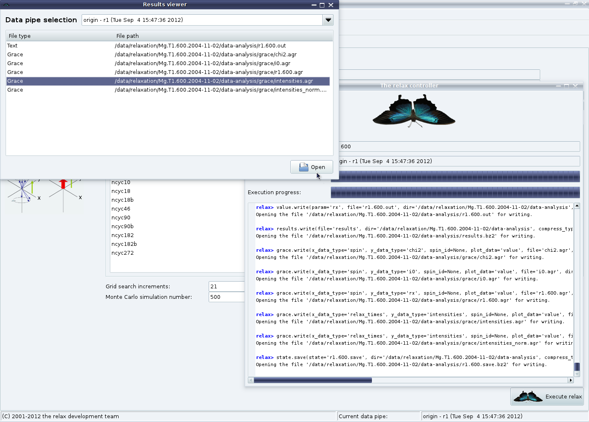

Next: Model-free analysis Up: The NOE auto-analysis in Previous: NOE GUI mode - Contents Index
Now that everything is set up, simply click on “Execute relax” in the NOE analysis tab. The relax controller window will appear displaying many messages. These should all be checked very carefully to make sure that everything has executed as you expected. The “Results viewer” window will also appear:
|

|
The results viewer window can be used to launch a text editor to see the NOE values and error or Grace to visualise the results (see Figure 6.1 on page ![[*]](crossref.png) ).
).
As a last step, the relax state can be saved (via the “File” menu) and relax closed. Take one last look at the noe.out log file to be certain that there are no strange warnings or errors.